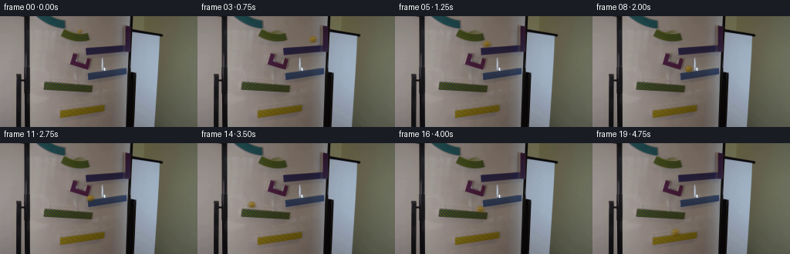
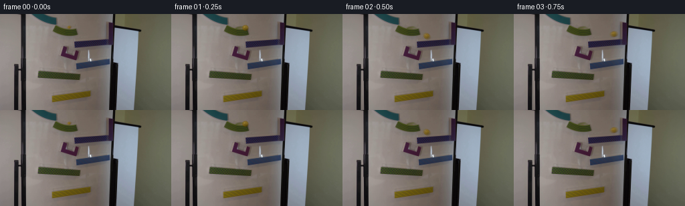
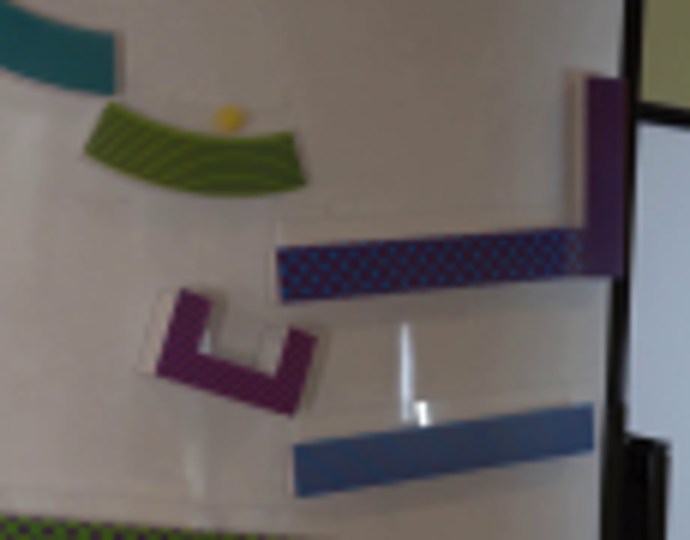
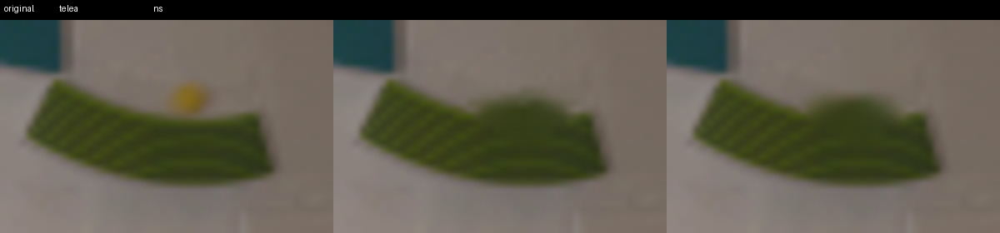
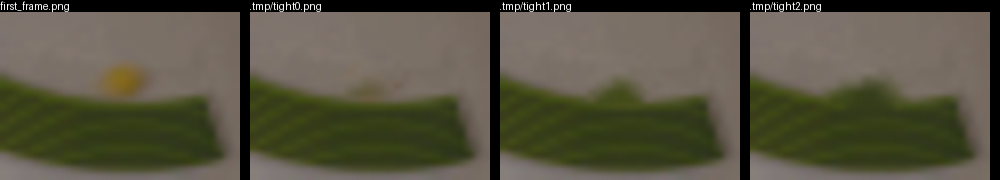
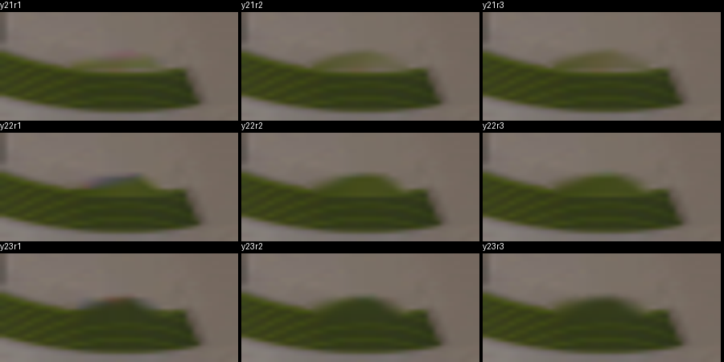
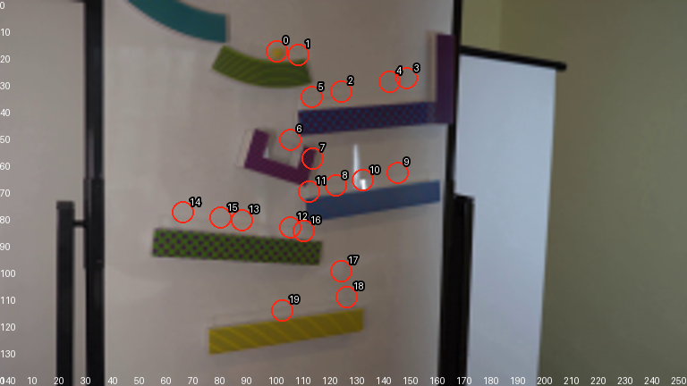
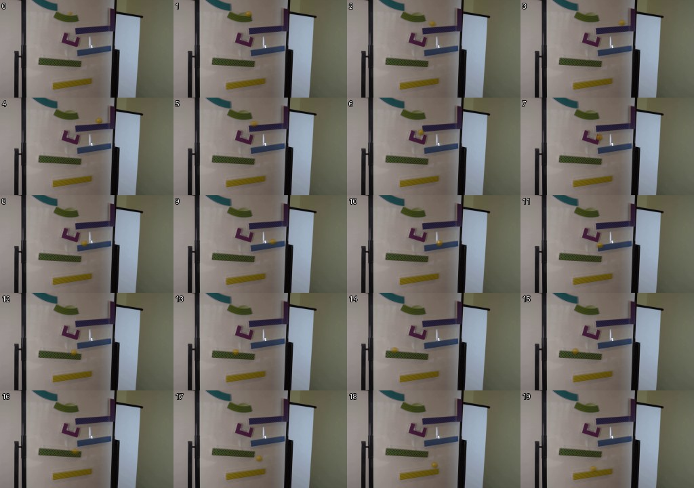

CODING AGENTS AS PIXEL WORLD MODELS
traex/GPT-5.6-Sol · 0103
点击播放 · 原生 RGB 像素
逐轮保存的候选
回放视频、检查图与代码变化。
每份候选均可单独播放。实际图片检查记录在下方工具轨迹中。
候选 01播放与检查图
点击播放 · 原生 RGB 像素


展开代码变化
--- 上一保存版本
+++ 本次保存版本
@@ -0,0 +1,145 @@
+"""Generate the fixed-camera magnetic marble-run sequence.
+
+The source photograph is retained as the plate. After the first (contractually
+identical) frame, the original marble is removed locally and a small shaded,
+translucent glass marble is composited along the visible ramps. A short
+exposure interval is integrated for natural camera motion blur.
+"""
+
+from pathlib import Path
+
+import cv2
+import numpy as np
+from PIL import Image
+
+import artifact_io
+
+
+CASE_DIR = Path(__file__).resolve().parent
+
+
+def clean_plate(source: np.ndarray) -> np.ndarray:
+ """Remove only the starting marble while preserving the green ramp."""
+ bgr = cv2.cvtColor(source, cv2.COLOR_RGB2BGR)
+ mask = np.zeros(source.shape[:2], np.uint8)
+
+ # The visible marble occupies x=99..106, y=17..21. Include its soft halo
+ # on the whiteboard, but stop before the patterned ramp below it.
+ cv2.ellipse(mask, (103, 19), (8, 5), 0, 0, 360, 255, -1)
+ mask[22:, :] = 0
+ plate = cv2.inpaint(bgr, mask, 2.0, cv2.INPAINT_NS)
+ return cv2.cvtColor(plate, cv2.COLOR_BGR2RGB)
+
+
+def glass_layer(shape, center, opacity=1.0):
+ """Return premultiplied RGB and alpha for a tiny amber glass sphere."""
+ h, w = shape
+ cx, cy = center
+ yy, xx = np.mgrid[:h, :w].astype(np.float32)
+
+ # A soft contact/air shadow, offset consistently with the room lighting.
+ shadow_d2 = ((xx - (cx + 1.4)) / 5.4) ** 2 + ((yy - (cy + 2.0)) / 3.6) ** 2
+ shadow_a = np.exp(-2.15 * shadow_d2) * 0.20 * opacity
+ shadow_a[shadow_d2 > 2.8] = 0.0
+
+ # Slightly oblate in the recorded image due to optics and motion softness.
+ nx = (xx - cx) / 4.75
+ ny = (yy - cy) / 4.45
+ rr = np.sqrt(nx * nx + ny * ny)
+ coverage = np.clip((1.10 - rr) / 0.22, 0.0, 1.0)
+
+ # Transparent center, darker amber rim, and gentle directional shading.
+ alpha = coverage * (0.59 + 0.18 * np.clip(1.0 - rr, 0.0, 1.0)) * opacity
+ rim = np.clip((rr - 0.62) / 0.38, 0.0, 1.0)
+ light = np.clip((-0.55 * nx - 0.72 * ny + 1.0) * 0.5, 0.0, 1.0)
+ core = np.array([139.0, 105.0, 8.0], np.float32)
+ color = core[None, None, :] + (light[..., None] - 0.48) * np.array(
+ [29.0, 24.0, 8.0], np.float32
+ )
+ color -= rim[..., None] * np.array([34.0, 31.0, 8.0], np.float32)
+
+ # Small window reflection and internal lower-right caustic sell glass.
+ glint = np.exp(-2.8 * (((xx - (cx - 1.45)) / 1.25) ** 2 +
+ ((yy - (cy - 1.35)) / 1.05) ** 2)) * coverage
+ caustic = np.exp(-3.4 * (((xx - (cx + 1.25)) / 1.35) ** 2 +
+ ((yy - (cy + 1.45)) / 0.90) ** 2)) * coverage
+ color = color * (1.0 - 0.52 * glint[..., None]) + \
+ np.array([244.0, 223.0, 139.0]) * (0.52 * glint[..., None])
+ color += caustic[..., None] * np.array([28.0, 23.0, 4.0])
+ color = np.clip(color, 0, 255)
+
+ # Premultiplied result: shadow first, then the colored sphere.
+ out_a = shadow_a + alpha * (1.0 - shadow_a)
+ out_rgb = (np.zeros((h, w, 3), np.float32) * shadow_a[..., None])
+ out_rgb += color * alpha[..., None] * (1.0 - shadow_a[..., None])
+ return out_rgb, out_a
+
+
+def render_exposure(plate: np.ndarray, previous, current) -> np.ndarray:
+ """Integrate a short trailing exposure without disturbing the locked plate."""
+ h, w = plate.shape[:2]
+
+ # Roughly the final 18% of the inter-frame travel is exposed. This keeps
+ # fast drops legible while adding the softness seen in the source marble.
+ samples = 7
+ start = np.array(current) * 0.82 + np.array(previous) * 0.18
+ centers = [start * (1.0 - t) + np.array(current) * t
+ for t in np.linspace(0.0, 1.0, samples)]
+
+ # Average independently rendered exposure samples in premultiplied form.
+ rgb_sum = np.zeros((h, w, 3), np.float32)
+ a_sum = np.zeros((h, w), np.float32)
+ for c in centers:
+ rgb, alpha = glass_layer((h, w), c, opacity=1.0)
+ rgb_sum += rgb
+ a_sum += alpha
+ rgb = rgb_sum / samples
+ alpha = np.clip(a_sum / samples, 0.0, 0.92)
+
+ # Reconcile averaged premultiplied color with averaged alpha.
+ foreground = np.divide(rgb, np.maximum(alpha[..., None], 1e-5))
+ result = plate.astype(np.float32) * (1.0 - alpha[..., None]) + \
+ foreground * alpha[..., None]
+ return np.clip(result + 0.5, 0, 255).astype(np.uint8)
+
+
+def generate() -> np.ndarray:
+ source = np.asarray(Image.open(CASE_DIR / "first_frame.png").convert("RGB"),
+ dtype=np.uint8)
+ plate = clean_plate(source)
+
+ # Hand-fit centers to the photographed rail surfaces. Momentum carries the
+ # marble briefly uphill on the purple, blue, and lower-green ramps; gravity
+ # then reverses it before each drop. This creates a coherent real-time run
+ # rather than a sequence of disconnected downward translations.
+ centers = [
+ (103.0, 19.0), # released on the top green ramp
+ (111.0, 20.5),
+ (127.0, 34.0), # drops onto the purple ramp
+ (151.5, 29.2),
+ (145.0, 30.5), # rolls back downhill
+ (116.0, 36.3),
+ (108.0, 52.0), # caught by the small purple chute
+ (116.5, 59.0),
+ (125.0, 69.2), # onto the blue ramp
+ (148.0, 64.5),
+ (135.0, 67.2), # reversal on blue
+ (115.0, 71.5),
+ (108.0, 84.8), # onto the long green ramp
+ (90.0, 82.0),
+ (68.0, 79.3), # slows near its raised left end
+ (82.0, 81.2), # gravity sends it back to the right
+ (113.0, 86.0),
+ (127.0, 101.0), # final free fall
+ (129.0, 110.7), # lands on yellow ramp
+ (105.0, 115.8), # rolls left down the final ramp
+ ]
+
+ frames = [source.copy()] # frame 00 must remain pixel-identical
+ for i in range(1, 20):
+ frames.append(render_exposure(plate, centers[i - 1], centers[i]))
+ return np.stack(frames).astype(np.uint8)
+
+
+if __name__ == "__main__":
+ artifact_io.save(generate(), CASE_DIR)
候选 02播放与检查图
点击播放 · 原生 RGB 像素
展开代码变化
--- 上一保存版本
+++ 本次保存版本
@@ -115,21 +115,21 @@
centers = [
(103.0, 19.0), # released on the top green ramp
(111.0, 20.5),
- (127.0, 34.0), # drops onto the purple ramp
- (151.5, 29.2),
- (145.0, 30.5), # rolls back downhill
- (116.0, 36.3),
+ (127.0, 36.0), # drops onto the purple ramp
+ (151.5, 33.0),
+ (145.0, 34.0), # rolls back downhill
+ (116.0, 38.5),
(108.0, 52.0), # caught by the small purple chute
(116.5, 59.0),
- (125.0, 69.2), # onto the blue ramp
- (148.0, 64.5),
- (135.0, 67.2), # reversal on blue
- (115.0, 71.5),
- (108.0, 84.8), # onto the long green ramp
- (90.0, 82.0),
- (68.0, 79.3), # slows near its raised left end
- (82.0, 81.2), # gravity sends it back to the right
- (113.0, 86.0),
+ (125.0, 72.0), # onto the blue ramp
+ (148.0, 68.0),
+ (135.0, 70.5), # reversal on blue
+ (115.0, 74.0),
+ (108.0, 89.0), # onto the long green ramp
+ (90.0, 87.0),
+ (68.0, 84.0), # slows near its raised left end
+ (82.0, 86.0), # gravity sends it back to the right
+ (113.0, 90.0),
(127.0, 101.0), # final free fall
(129.0, 110.7), # lands on yellow ramp
(105.0, 115.8), # rolls left down the final ramp
可观测工具轨迹
实际执行的命令与返回图片。
命令 1exit 0
/bin/bash -lc 'cat prompt.txt'
命令 2exit 0
/bin/bash -lc "cat GENERATION_RULES.md && printf '\\n---FILES---\\n' && find . -maxdepth 2 -type f -printf '%p\\n' | sort"
命令 3exit 0
/bin/bash -lc "python3 - <<'PY'
from PIL import Image
im=Image.open('first_frame.png')
print(im.mode, im.size)
PY
ffmpeg -version | head -n 3
python3 - <<'PY'
mods=['cv2','numpy','PIL','imageio','skimage']
for m in mods:
try:
x=__import__(m); print(m,'OK',getattr(x,'__version__',''))
except Exception as e: print(m,'NO',e)
PY"命令 4exit 0
/bin/bash -lc 'cat artifact_io.py'
命令 5exit 0
/bin/bash -lc "python3 - <<'PY'
from PIL import Image
im=Image.open('first_frame.png')
im.crop((65,0,180,90)).resize((690,540)).save('.tmp/crop.png')
PY"命令 6exit 0
/bin/bash -lc "python3 - <<'PY'
import cv2, numpy as np
im=cv2.imread('first_frame.png'); hsv=cv2.cvtColor(im,cv2.COLOR_BGR2HSV)
# Print connected color-ish components by kmeans? quantized unique top clusters
z=im.reshape((-1,3)).astype(np.float32)
crit=(cv2.TERM_CRITERIA_EPS+cv2.TERM_CRITERIA_MAX_ITER,100,.2)
_,labs,c=cv2.kmeans(z,12,None,crit,10,cv2.KMEANS_PP_CENTERS)
for i,col in enumerate(c.astype(int)):
ys,xs=np.where(labs.reshape(im.shape[:2])==i)
print(i,'BGR',col,'n',len(xs),'bbox',xs.min(),ys.min(),xs.max(),ys.max())
PY"命令 7exit 0
/bin/bash -lc "python3 - <<'PY'
from PIL import Image
import numpy as np
im=np.array(Image.open('first_frame.png'))
for y in range(12,29):
print(f'{y:02}',end=' ')
for x in range(92,114):
r,g,b=im[y,x]
# glyph by dominant colors/brightness
if r>110 and r>g*1.15 and g>b*1.3: c='Y'
elif r>95 and g>75 and b<55: c='y'
elif g>r*1.1: c='G'
elif max(r,g,b)-min(r,g,b)<10: c='.'
else:c=' '
print(c,end='')
print()
print('values')
for y in range(15,25):
print(y, [(x,im[y,x].tolist()) for x in range(96,109)])
PY"命令 8exit 0
/bin/bash -lc "python3 - <<'PY'
import cv2, numpy as np
im=cv2.imread('first_frame.png')
for meth,n in [(cv2.INPAINT_TELEA,'telea'),(cv2.INPAINT_NS,'ns')]:
m=np.zeros(im.shape[:2],np.uint8); cv2.ellipse(m,(103,19),(8,6),0,0,360,255,-1)
o=cv2.inpaint(im,m,3,meth)
cv2.imwrite(f'.tmp/{n}.png',o)
# show crops enlarged side by side
from PIL import Image,ImageDraw
ims=[Image.open(x).crop((75,8,125,40)).resize((400,256)) for x in ['first_frame.png','.tmp/telea.png','.tmp/ns.png']]
out=Image.new('RGB',(1200,280));
for i,x in enumerate(ims): out.paste(x,(i*400,24))
ImageDraw.Draw(out).text((5,4),'original telea ns',fill='white')
out.save('.tmp/inpaint_compare.png')
PY"命令 9exit 0
/bin/bash -lc "python3 - <<'PY'
import cv2,numpy as np
im=cv2.imread('first_frame.png'); rgb=im[:,:,::-1]; R,G,B=[rgb[:,:,i] for i in range(3)]
roi=np.zeros(im.shape[:2],np.uint8); roi[13:25,95:112]=1
for d in [0,1,2]:
m=((R.astype(int)-G.astype(int)>11)&(G.astype(int)-B.astype(int)>15)&(R>108)&(roi>0)).astype(np.uint8)*255
if d:m=cv2.dilate(m,cv2.getStructuringElement(cv2.MORPH_ELLIPSE,(2*d+1,2*d+1)))
out=cv2.inpaint(im,m,2,cv2.INPAINT_TELEA)
cv2.imwrite(f'.tmp/tight{d}.png',out)
print(d,np.where(m>0)[1].min(),np.where(m>0)[1].max(),np.where(m>0)[0].min(),np.where(m>0)[0].max(),np.sum(m>0))
from PIL import Image,ImageDraw
files=['first_frame.png']+[f'.tmp/tight{i}.png' for i in range(3)]
out=Image.new('RGB',(1000,180))
for i,f in enumerate(files):
x=Image.open(f).crop((88,10,118,34)).resize((240,168));out.paste(x,(i*250,12));ImageDraw.Draw(out).text((i*250,0),f,fill='white')
out.save('.tmp/tights.png')
PY"命令 10exit 0
/bin/bash -lc "python3 - <<'PY'
from PIL import Image
import numpy as np
O=np.asarray(Image.open('first_frame.png')).astype(int)
B=np.asarray(Image.open('.tmp/tight0.png')).astype(int)
for y in range(14,25):
print(y, ['%+d,%+d,%+d'%tuple(O[y,x]-B[y,x]) for x in range(96,111) if np.max(abs(O[y,x]-B[y,x]))>3])
PY"命令 11exit 0
/bin/bash -lc "python3 - <<'PY'
import cv2,numpy as np
from PIL import Image,ImageDraw
im=cv2.imread('first_frame.png')
outs=[]
for maxy in [21,22,23]:
for rad in [1,2,3]:
m=np.zeros(im.shape[:2],np.uint8);cv2.ellipse(m,(103,19),(8,6),0,0,360,255,-1);m[maxy+1:]=0
o=cv2.inpaint(im,m,rad,cv2.INPAINT_NS)
outs.append((f'y{maxy}r{rad}',o))
out=Image.new('RGB',(900,450))
d=ImageDraw.Draw(out)
for i,(n,o) in enumerate(outs):
x=(i%3)*300;y=(i//3)*150
z=Image.fromarray(o[:,:,::-1]).crop((85,8,122,35)).resize((296,135))
out.paste(z,(x,y+15));d.text((x,y),n,fill='white')
out.save('.tmp/inpaints2.png')
PY"命令 12exit 0
/bin/bash -lc "python3 generate.py && python3 - <<'PY'
from PIL import Image
import numpy as np
z=np.load('pixels.npz')['pixels']
print('pixels',z.shape,z.dtype)
a=np.array(Image.open('first_frame.png')); b=np.array(Image.open('frames/00.png'))
print('frame00 exact',np.array_equal(a,b),'maxdiff',np.max(np.abs(a.astype(int)-b.astype(int))))
frames=np.stack([np.array(Image.open(f'frames/{i:02}.png')) for i in range(20)])
print('frames',frames.shape,frames.dtype,'dynamic-pixels',[(i,int(np.sum(np.any(frames[i]"'!=frames[i-1],axis=2)))) for i in range(1,20)])
PY'命令 13exit 0
/bin/bash -lc "python3 - <<'PY'
from PIL import Image,ImageDraw,ImageFont
im=Image.open('first_frame.png').resize((768,432))
D=ImageDraw.Draw(im)
cs=[(103,19),(111,20.5),(127,34),(151.5,29.2),(145,30.5),(116,36.3),(108,52),(116.5,59),(125,69.2),(148,64.5),(135,67.2),(115,71.5),(108,84.8),(90,82),(68,79.3),(82,81.2),(113,86),(127,101),(129,110.7),(105,115.8)]
for i,(x,y) in enumerate(cs):
x*=3;y*=3
D.ellipse((x-12,y-12,x+12,y+12),outline=(255,40,20),width=2)
D.text((x+8,y-18),str(i),fill=(255,255,255),stroke_width=2,stroke_fill=(0,0,0))
for x in range(0,256,10): D.text((x*3,420),str(x),fill='white')
for y in range(0,144,10): D.text((0,y*3),str(y),fill='white')
im.save('.tmp/paths.png')
PY"命令 14exit 130
/bin/bash -lc "python3 generate.py
python3 - <<'PY'
from PIL import Image
# sequence of all frames at 2x, four columns
ims=[Image.open(f'frames/{i:02}.png').resize((512,288)) for i in range(20)]
out=Image.new('RGB',(2048,1440),(20,20,20))
from PIL import ImageDraw
d=ImageDraw.Draw(out)
for i,im in enumerate(ims):
x=(i%4)*512;y=(i//4)*288;out.paste(im,(x,y));d.text((x+4,y+4),str(i),fill='white',stroke_width=2,stroke_fill='black')
out.save('.tmp/allframes.png')
PY"命令 15exit 0
/bin/bash -lc "ps aux | grep -E 'python3|generate' | grep -v grep || true; ls -lh pixels.npz inspection.png index.html frames/19.png 2>/dev/null; stat -c '%y %n' pixels.npz frames/19.png generate.py"
命令 16exit 0
/bin/bash -lc "python3 - <<'PY'
import generate,time
s=time.time(); f=generate.generate(); print('generated',time.time()-s,f.shape)
PY"命令 17exit 0
/bin/bash -lc "python3 generate.py && stat -c '%y %n' pixels.npz frames/19.png && python3 - <<'PY'
from PIL import Image,ImageDraw
ims=[Image.open(f'frames/{i:02}.png').resize((256,144)) for i in range(20)]
out=Image.new('RGB',(1024,720),(20,20,20));d=ImageDraw.Draw(out)
for i,im in enumerate(ims):
x=(i%4)*256;y=(i//4)*144;out.paste(im,(x,y));d.text((x+3,y+3),str(i),fill='white',stroke_width=1,stroke_fill='black')
out.save('.tmp/allframes.jpg',quality=88)
print('saved')
PY"命令 18exit 0
/bin/bash -lc 'git status --short 2>/dev/null || true; ls -lh generate.py pixels.npz index.html inspection.png transition_check.png frames/00.png frames/19.png'
命令 19exit 0
/bin/bash -lc "python3 -m py_compile generate.py && python3 - <<'PY'
from pathlib import Path
from PIL import Image
import numpy as np
f=[np.asarray(Image.open(Path('frames')/f'{i:02}.png').convert('RGB')) for i in range(20)]
a=np.stack(f)
src=np.asarray(Image.open('first_frame.png').convert('RGB'))
assert a.shape==(20,144,256,3),a.shape
assert a.dtype==np.uint8,a.dtype
assert np.array_equal(a[0],src)
assert Path('pixels.npz').is_file() and Path('index.html').is_file()
z=np.load('pixels.npz')['pixels']
assert z.shape==(144,256,20) and z.dtype==np.uint32
print('PASS: 20 RGB frames, 256x144, uint8; frame 00 exact; pixels/index artifacts present')
PY"视觉工具实际返回图片 1

视觉工具实际返回图片 2

视觉工具实际返回图片 3

视觉工具实际返回图片 4

视觉工具实际返回图片 5

视觉工具实际返回图片 6

视觉工具实际返回图片 7

视觉工具实际返回图片 8

视觉工具实际返回图片 9

保存候选 2 份；完成命令 19 次；可验证图片返回 9 张。原始 API 响应与完整日志保留在本地。